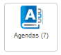
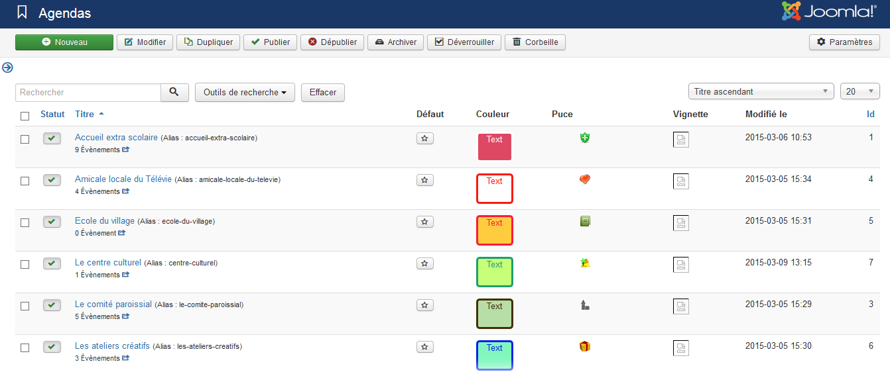
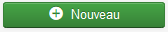
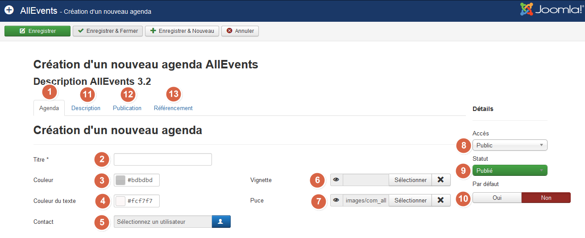
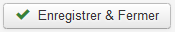
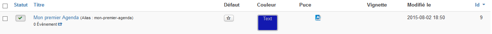

Toutes les fonctionnalités de AllEvents ont un tronc commun : la notion d'agenda. Un évènement est attaché à un agenda; l'évènement "Sortie au musée" pourra faire partie de l'agenda "Sorties" alors que l'évènement "Réunion" pourrait faire partie de l'agenda "Vie du club", l'évènement "Stage d'été" d'un agenda "Nos enfants".
Vous pourriez décider que, sur votre site, vous n'auriez qu'un seul agenda et que, par conséquent, cette notion d'agenda est superflue. Pas de problème ! Un évènement n'est pas obligatoirement relié à un agenda et vous pourriez donc ne pas vous en soucier. Toutefois, parce que nul ne sait comment va évoluer votre site, je vous recommande de prendre le temps de créer un agenda; ceci afin d'être prêt le jour où vous en auriez d'autres. En créant un agenda dès le début, vos évènements et toutes les autres données de AllEvents seront déjà prêts et cela simplifiera l'évolution multi-agenda.
Pour créer un agenda, connectez-vous à l'administration de votre site puis rendez-vous dans le menu AllEvents. Cliquez sur le picto suivant : 
La liste des agendas crééss’affiche :

Cliquez sur . Le formulaire suivant s'ouvre :
Seul le titre de l'Agenda (1) est obligatoire, néanmoins, je vous conseille de remplir les paramètres suivants afin de rendre votre agenda et votre site agréables :

1 – Onglet Agenda : il reprend les données principales de l’agenda
2 – Titre : Il s'agit du titre de votre Agenda. Choisissez quelque chose d'assez générique qui vous permettra de classer vos événements le plus efficacement possible.
3&4 – Couleurs : Vous pouvez définir une couleur de fond et une couleur du texte. Ces couleurs seront utilisées dans les pages frontend afin de différencier les évènements d'un agenda par rapport à un autre agenda; que ce soit dans les listes des évènements, dans le calendrier, dans la page de description d'un évènement, ...
5 – Lien de contact : vous pouvez choisir un utilisateur qui sera prévenu par e-mail lors de l'inscription à un événement et lors d'une proposition d'évènement.
6 – Vignette : vous pouvez définir une vignette pour votre agenda. Cette vignette sera utilisée entre autre dans la page de description de l'évènement ou dans celle de description de l'agenda; dans le frontend. La vignette de l'agenda sera utilisée pour représenter l'évènement si vous ne choisissez pas une vignette dans l'écran d'édition de l'évènement.
7 – Puce : vous pouvez définir une puce pour votre agenda. Cette puce sera utilisée de partout sur le frontend de votre site afin de symboliser l'agenda. AllEvents possède déjà quelques puces, mais vous pouvez également télécharger les vôtres depuis votre ordinateur.
8 – Accès : vous pouvez déterminer un niveau d'accès pour votre agenda. Par défaut ce paramètre est réglé sur “accès public”
9 – Statut : vous pouvez déterminer le statut de l'agenda. Attention, si vous ne publié pas l'Agenda, les événements se trouvant dedans ne seront pas publiés également
10 – Par défaut : vous pouvez déterminer si l’agenda est l’agenda qui sera affecté par défaut à la création d’un évènement.
11 – Description : vous pouvez inscrire une description pour votre agenda. Cette description est, comme tous les articles Joomla !, un code HTML. Cela signifie que vous pouvez écrire comme vous écririez un article en y ajoutant des liens, des images... Cette description sera affichée sur le frontend de votre site dans les pages agenda.
Pour aller plus loin, vous pouvez également remplir les paramètres suivants :
12 – Statut : vous pouvez déterminer le statut de l'agenda. Attention, si vous ne publié pas l'Agenda, les événements se trouvant dedans ne seront pas publiés également
13 – Optimisation du référencement : Afin d’optimiser votre référencement, vous pouvez remplir les méta-descriptions, Mots clés et robots.
Une fois que vous avez rempli toutes les informations nécessaires, vous pouvez cliquer sur . Votre Agenda se trouve désormais dans le gestionnaire d'Agenda. C'est à partir de cette page que vous pourrez l'éditer, le modifier, le supprimer...
